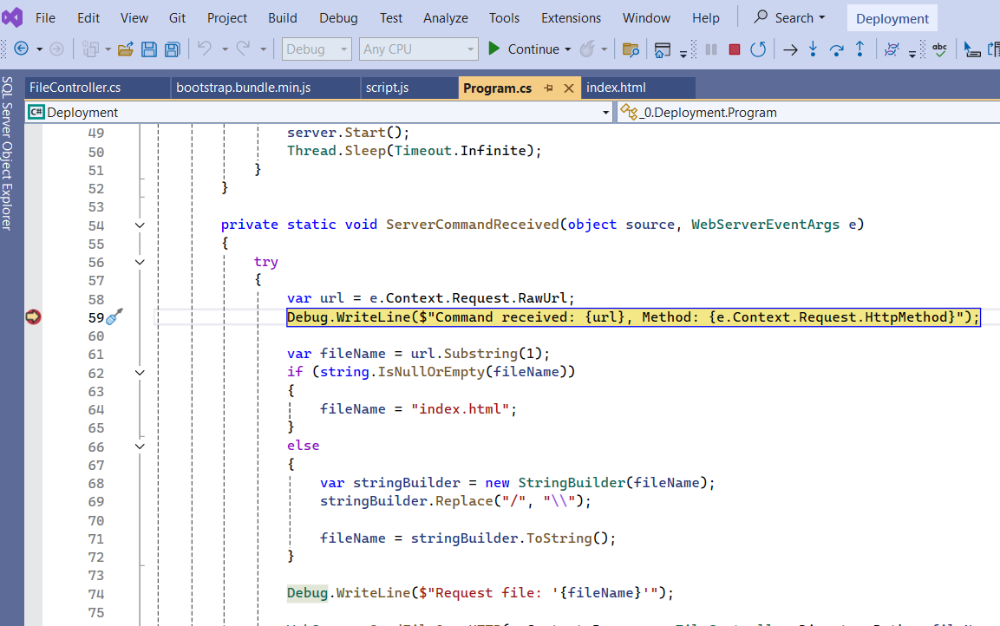
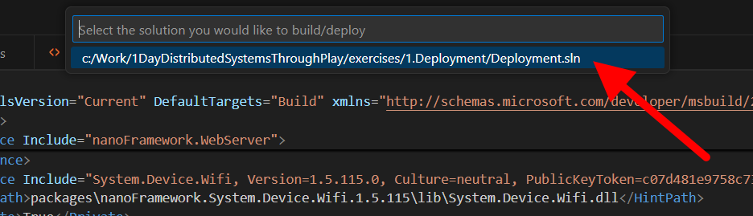
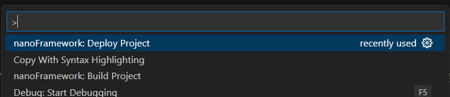
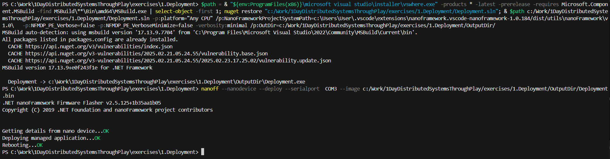

Exercise 1:
Deploy an application
Deploying with Visual Studio
Deploying a NanoFramework application from Visual Studio is typically easy and involves only a few steps:
- Make sure the correct device is selected in the extension
- F5 to run the application
1. Make sure the correct device is selected
The NanoFramework extension for Visual Studio adds a 
Device Explorer window which shows all compatible ESP32 devices that are connected
to the computer. To open the window, go to View -> Other Windows -> Device Explorer.
Once this window is open, it will list all compatible devices connected to the computer (in this case, there should only be one). Select the
device you wish to flash. In the example below, the device is connected to
COM3 and is an ESP32_REV3 image.

Your Task: Open the Device Explorer window and select the connected ESP32 device.
2. F5 to run the application
Your application is now ready to deploy. Hit F5 to deploy and debug your application. The Visual Studio extension will now compile
your application, deploy it to the selected device, and start debugging. You can use most Visual Studio debugging tools (e.g.
Breakpoints, Quick Watch, Watches, etc.)

Your Task: Build and deploy the application to your device.
3. Success!
If you managed to deploy everything successfully, you should see a message in your debugger:
You have successfully deployed your first NanoFramework application at 01/01/1970 00:08:18
Your Task: Confirm that you see the success message in the output window.
4. Connecting to WiFi
You'll notice 2 things of interest:
- The connected screen will display something similar to:
Started 01/01/1970 00:02 0.0.0.0
- The log entry in the Output tab of Visual Studio will log an incorrect date
This is because the ESP32 doesn't have a real-time clock to keep track of the date.
NanoFramework manages the date and time of devices by getting the current time once the device connects to a network with a
time server. So let's connect to the WiFi now...
There is a method called
ConnectToWiFi()
which we need to complete. It looks like this:
private static void ConnectToWiFi() { // Todo: Connect to WiFi }
NanoFramework provides us with a class called
WifiNetworkHelper
that exposes a static method named
ConnectDhcp
which we can use to connect to the WiFi network. The method takes 2 parameters:
- The SSID (
introtomessaging) - The password for the WiFi network (
IsY2TPxx0TI9)
This method returns
true or false depending on if the connection to the WiFi was successful.
Add a call to ConnectDhcp
to connect to the WiFi, and pass in the SSID and Password (they're in the list above).
After you've done that, when you deploy your application again you should see that the date and time displayed are now correct.
The last thing we want to do is to display the IP Address of our device. To do that, make a call to:
ipAddress = IPGlobalProperties.GetIPAddress().ToString();
Now when we deploy our application, the OLED screen will show the correct date and time as well as the IP Address of our device.
🎉👏
- Your Task: Modify the
ConnectToWiFimethod to connect to theintrotomessagingnetwork using the provided password. - Your Task: Display the device's IP address on the OLED screen.
What We Learnt
In this exercise, you:
- Successfully deployed your first application to an ESP32 device using Visual Studio
- Displayed output on the OLED screen from your application
- Learned how to connect a NanoFramework device to WiFi
This may seem like a small first step, but it's a powerful one: You've now got a live device that can
communicate with the outside world. That's the heart of any distributed system.
If you're done early, why not try some of the Bonus Exercises?
Deploying with VSCode
There are 2 steps to deploying a NanoFramework application to a microcontroller like an ESP32 (which is what we are using during this workshop)
using the vscode add-on. At a summary, these steps are:
- Build the project
- Deploy the project
1. Build the application
Open the
Command Palette (Default shortcut is: CTRL + SHIFT + P) and search for NanoFramework: Build Project. Once found, run that command.
The build command will present you with a parameter, asking you which solution you would like to build. Select the
1.Deployment\Deployment.sln solution file.
The command will now compile the solution for you, getting it ready to deploy. The build log will look something like this:

Once complete, your solution will be built. Now you need to deploy it.
Your Task: Use the NanoFramework extension to build the
Deployment.sln solution from the Command Palette.
2. Deploy the application
Open the
Command Palette (Default shortcut is: CTRL + SHIFT + P) and search for NanoFramework: Deploy Project. Once found, run that command.
The command will ask you for a parameter, asking you for which solution to deploy. Select the
1.Deployment\Deployment.sln solution file.The command will now ask you for a second parameter: which COM port to deploy to. Select the COM port that the device is plugged into.

Your solution will now be deployed to the device. The output should look something like this:

Your Task: Deploy the solution to your device and confirm a successful deployment in the terminal output.
3. Success!
Congratulations! You have managed to deploy your first NanoFramework application. Now we need to make it do something!
4. Connecting to WiFi
If you look at the OLED screen connected to your device, You'll notice something:
The connected screen will display something similar to:
Started 01/01/1970 00:02 0.0.0.0In fact, you might recognise the date (01/01/1970) as one of the typical Epoch dates.
This is because the ESP32 doesn't have a real-time clock to keep track of the date.
NanoFramework manages the date and time of devices by getting the current time once the device connects to a network with a
time server. So let's connect to the WiFi now...
There is a method called
ConnectToWiFi()
which we need to complete. It looks like this:
private static void ConnectToWiFi() { // Todo: Connect to WiFi }
NanoFramework provides us with a class called
WifiNetworkHelper
that exposes a static method named
ConnectDhcp
which we can use to connect to the WiFi network. The method takes 2 parameters:
- The SSID (
introtomessaging) - The password for the WiFi network (
IsY2TPxx0TI9)
This method returns
true or false depending on if the connection to the WiFi was successful.
Add a call to ConnectDhcp
to connect to the WiFi, and pass in the SSID and Password (they're in the list above).
After you've done that, when you deploy your application again you should see that the date and time displayed are now correct.
The last thing we want to do is to display the IP Address of our device. To do that, make a call to:
ipAddress = IPGlobalProperties.GetIPAddress().ToString();
Now when we deploy our application, the OLED screen will show the correct date and time as well as the IP Address of our device.
🎉👏
Your Task: Implement the
ConnectToWiFi method using WifiNetworkHelper.ConnectDhcp and verify the screen shows the correct time and IP address.
What We Learnt
In this exercise, you:
- Successfully deployed your first application to an ESP32 device using VS Code
- Displayed output on the OLED screen from your application
- Learned how to connect a NanoFramework device to WiFi
This may seem like a small first step, but it's a powerful one: You've now got a live device that can
communicate with the outside world. That's the heart of any distributed system.
If you're done early, why not try some of the Bonus Exercises?
Bonus round!
Done already? Waiting for everyone else to finish? Why not tackle some of these bonus challenges?
1. Display the current UTC time
Now that we have a date and time, let's update the date on the screen every minute.
2. Scan for all available WiFi networks
Use the ESP32's Wi-Fi radio to scan for nearby wireless networks and show the results on the OLED. This could be as simple as displaying
the number of networks found or cycling through a few network names and signal strengths on the screen.
It's a quick way to explore the networking API beyond just connecting, and it gives immediate feedback on the device's surroundings.
🔎 Tip: The starting point will be to use the
WifiAdapter wifi = WifiAdapter.FindAllAdapters()[0] wifi adapter
3. Implement a marquee on the OLED screen
The OLED screen can only show a little information. If you want to display text longer than a few characters, you'll have to implement
scrolling on the screen.
Complete the implementation of the
Marquee method in the Infrastructure\Screen.cs file.
🔎 Hint: You can create a
Thread class and use the thread to move the text